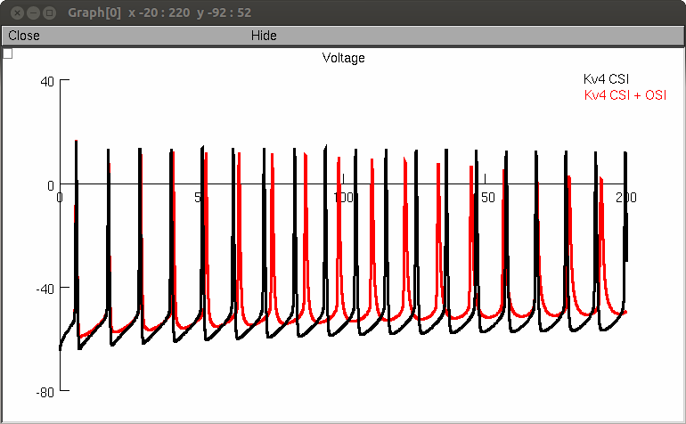
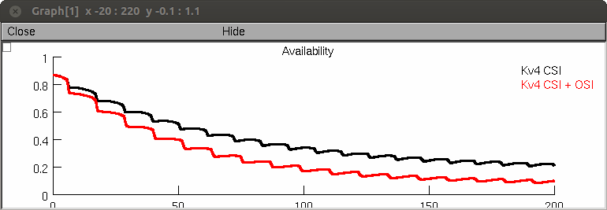

CA1 pyramidal neuron model and IonChannelLab simulations from the paper:
J.D. Fineberg, D.M. Ritter and M. Covarrubias
Modeling-independent elucidation of inactivation pathways in
recombinant and native A-type Kv channels. J Gen Physiol 2012
These models predict the differential effects of having varying
pathways of inactivation. Model of CA1 pyramidal neuron from Migliore
et al (1999; ModelDB accession #2796) with the A-type potassium
current replaced by Markov models of Kv4 channels.
As in the paper, in file names:
CSI = closed state inactivation
OSI = open state inactivation
CSIOSI = combined CSI and OSI
To reproduce figures:
Figure 2, 3, and 4
1) Open folder "IonChannelLab files"
2) Open .ichl file of channel interested in
3) Click "Simulations" tab
4) Underneath "Experiments" select experiment interested in
5) Click Run
Figure 11C -
1) open "Figure11C CSI.hoc" and click "Run Figure 11C CSI"
2) open "Figure11c CSIOSI.hoc" and click "Run Figure 11C
CSI+OSI"
Figure 11D -
1) open "Figure11D.hoc" and click "Run Figure 11D"
Figure 11E-G -
1) open "Figure11E.hoc" and click "Run Figure 11E"
"Auto Launch" (will start the mosinit.hoc file if you have NEURON
installed and your browser is properly configured) to recreate Figure
11E. Press "Run Figure11E" and in a minute you should see graphs like:


To load figures 11C, 11D, and the channel simulations the entire
folder must be dowloaded and opened. Figures 11A&B can be simulated
creating single compartment models with Kv4 CSI or Kv4 CSI+OSI and
using the vClamp family or the grapher function for current families
and SSI, repsectively.
Any questions may be directed to david.ritter@jefferson.edu